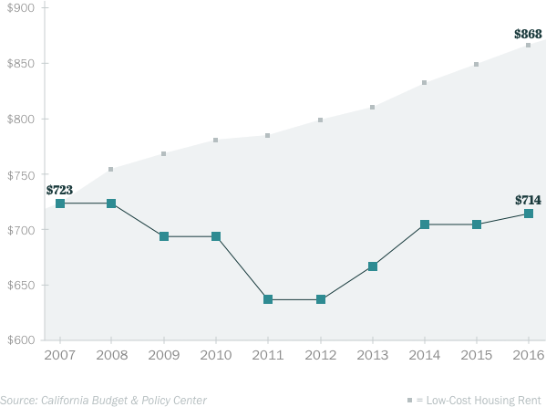
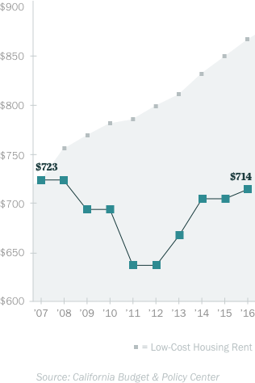
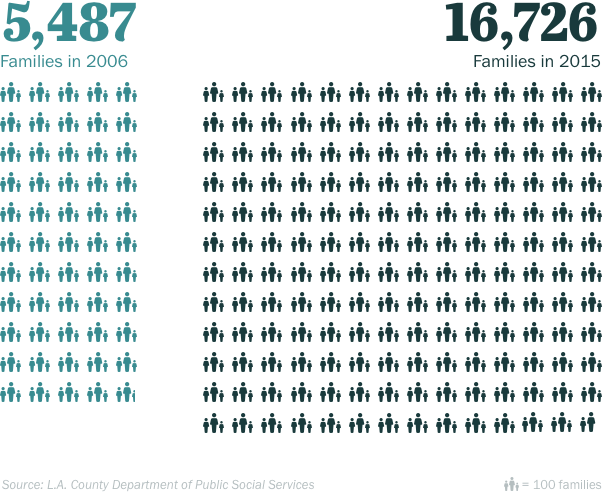
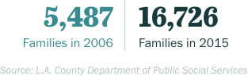
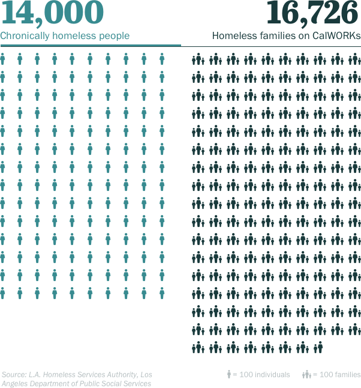
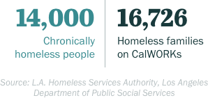
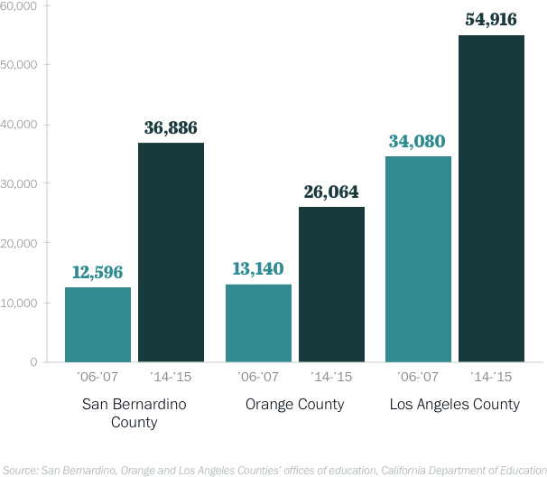
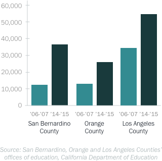
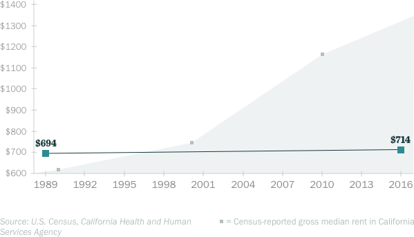
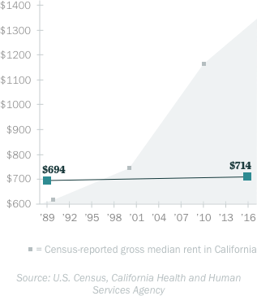

Why more California families are becoming homeless
Why more California families are becoming homeless
Published January 5, 2017
by Rina Palta and Priska NeelyDaejanae Marshall remembers waking up in a panic before 5 a.m. Something was wrong.
She was 22 and a new mom. And baby Zah'Nyah was her world.
“I had promised myself there’s things I was going to do while I was pregnant,” she said. “And after meeting my baby, I was like: I have to get us a place. You have to have your own room.”
Marshall was homeless. She had a job at a movie theater and cash assistance from the state, but that didn’t cover rent.
They were living in a shelter in Boyle Heights, hoping one of Los Angeles’ scattered non-profits would find them a subsidized apartment. Despite the disruption, Zah'Nyah had been doing well.
But that Tuesday morning, Marshall awoke suddenly to find Zah'Nyah wasn’t breathing. Marshall jumped to action.
“I was doing CPR,” she said. “The ambulance was asking all these dumb questions. It was just infuriating.
“I remember we were just about to go and they were like: ‘it’s too late.’” Marshall recalled. “And I just broke. You know. I broke.”
An autopsy would turn up no illness that could explain it. Zah'Nyah’s death was reported as Sudden Unexplained Infant Death and the medical examiner noted “co-sleeping” as a factor.
The shelter didn’t have a crib, just bunk beds. Marshall said the shelter operators didn’t allow her to bring a bassinet or any other “outside” furniture. Fearing Zah'Nyah would fall and hurt herself, Marshall had dragged a mattress onto the floor and that’s where the two slept every night.
Experts say sleeping on a regular bed can obstruct an infant’s breathing and lead to accidental death.
Zah'Nyah was 3 ½ months old when she died on November 27, 2012.
I remember we were just about to go and they were like: ‘it’s too late.’ And I broke. You know. I broke.
Her death is a rare, tragic result of a growing problem: California is failing to keep parents with young children from slipping into extreme poverty and, ultimately homelessness.
Despite federal and state money earmarked specifically to support children’s wellbeing, government programs are inadequate to meet the region’s rising housing costs and falling incomes, leaving the poorest families on the street.
California’s version of cash welfare, CalWORKs, gives a parent with two children a maximum of $714 a month. That’s meant to be flexible income impoverished and down-on-their-luck families can use to pay the rent and utilities or to buy their kids shoes.
But it’s not enough.
According to the California Budget & Policy Center, the average low-cost apartment in California costs $870 a month – about $150 more than the CalWORKs check.
“The maximum amount of assistance won’t even cover low-cost rent in California,” said Alissa Anderson, a senior analyst with the group.
In Los Angeles County, rent-restricted apartments for lower-income families cost even more, $977 a month. The average asking rent for a regular apartment in Los Angeles is $2,108 a month, according to the California Housing Partnership. The maximum CalWORKs payments for a family of three would cover about a third of that.
Maximum monthly CalWORKs check for family of three (2007-2016)
 “That is the single most direct factor in contributing to the rise in family homelessness,” said Phil Ansell, director of Los Angeles County’s effort to address homelessness.
“If the CalWORKs benefits are inadequate to pay for housing, then they become homeless,” he said. “The equation is that simple.”
Rents in L.A. spiked 25 percent from 2000 to 2012. During the same period, CalWORKs not only failed to keep up – the grant was reduced by $7 per month.
The result? The number of L.A. County families enrolled in CalWORKs who couldn’t give a permanent address—code for homeless – tripled from about 5,500 in 2006 to almost 17,000 in 2015.
Homeless families on CalWORKs in LA County
 Many of the thousands of homeless families in Los Angeles include small children. Some live in shelters. Others live in RVs or sleep in their cars. Some are temporarily staying with whomever will take them in.
And the consequences can be dire.
KPCC examined L.A. County coroner reports over a five-year period starting in 2010 and found that at least eight infants identified by officials as homeless have died sleeping in conditions experts call unsuitable, but were the families’ only option. Zah'Nyah was one of those children. The others include:
- August Aravena, who started his life in the home of his maternal grandmother. His family was kicked out after a fight. For a week, August slept in a car seat in the family car next to his older brother in the back seat. His parents slept in the front, according to official reports. On April 27, 2015, the dad got up and took the older boy to school. When he got back and checked the baby, he was dead. Like Zah'Nyah, August was 3 ½ months old.
- Dominique Chadwick, who slept in a car seat next to his family’s makeshift bed on a friend’s porch. On September 28, 2011, a coroner's report shows, his father got up in the morning and found Dominque had died. He was 7 months old.
- Lelah Hearn, who died as she slept on a pile of blankets on the floor of her uncle’s converted garage on August 20, 2013. She was 4 months old.
Even in a region that is publicly and actively wrestling with housing the homeless, the public focus is not on these children. Instead, it is primarily on the vexing problem – and blight -- of the chronically mentally ill homeless population.
But only about a third of L.A.’s roughly 47,000 homeless suffer from severe mental illness or have substance abuse problems that lead to long-term life on the street, according to the latest homeless census conducted in January 2016.
Chronically homeless people compared to the number of homeless families on CalWORKs
 In fact, the number of people living on Skid Row – widely seen as the epicenter of homelessness in Los Angeles and the region’s biggest problem – are only about a third of the number of homeless families on CalWORKs. And about 20 percent of homeless families either don’t qualify or haven’t applied for CalWORKs.
Homeless families are everywhere in Los Angeles County.
Wade past the group of day laborers splitting a pizza by the baseball fields in Panorama Park, through the shopping carts lining the tennis courts, and into the men’s restroom and most days you’ll run across Allan Monteagudo, scraping spam and eggs off a spatula in a wash bin he fills with water from the stainless steel bathroom sink and rests on the dirty floor.
It isn’t easy with no hot water.

Monteagudo, 43, lives with his girlfriend Lackee Salvago, teenaged son Aaron and the couple’s year-old baby A.J. in an RV, parked on the street.
Turning on the water in the RV is out of the question.
“It’s old,” Allan said. “It barely moves.”
Fortunately, it does — just enough to shuffle 100 feet every 72 hours and avoid a ticket from the parking enforcement agents who come by every day, chalking tires.
And that means for the past six months, it has served its purpose: a home for the family. Monteagudo hopes it’ll continue to be – though the city of Los Angeles has banned sleeping in cars and RVs on residential city streets. The prohibition goes into effect Jan. 7.
For now, Monteagudo and Salvago sleep in the RV’s full-size bed while A.J. Aaron curls up on the kitchen bench. They cook on portable stoves and drink bottled water. They shower at a nearby 24 Hour Fitness. The monthly fee is worth it for the showers.
Salvago sometimes works as an in-home caregiver.
But it’s hard.
Even before he was born, A.J. was diagnosed with a serious neurological condition, spina bifida. Doctors performed an emergency cesarean section and A.J. emerged with fluid in his brain. Doctors in East L.A. rushed him to Children's Hospital Los Angeles, where he spent months in the neonatal intensive care unit.
“He was always sick,” Monteagudo said.
A.J. recovered enough for doctors to send him home. But the family didn’t have one.
“We needed a place,” Monteagudo said. And they didn’t want to leave the L.A. doctors who were caring for the baby.

The growing family moved into a room, sharing a two-bedroom apartment in Panorama City with another couple, friends of friends. The U.S. Department of Housing and Urban Development estimates 38 percent of L.A. County’s children live in “crowded” households like this, with more people than rooms in the house, including the kitchen.
Those situations are considered bad for kids. Babies and toddlers don’t have space to move. It’s loud. There’s no privacy. Developmental, speech, and emotional delays are common, according to Stacey Scarborough, with Venice Family Clinic’s Head Start program.
These crowded households put families on the fragile precipice of homelessness. A dead car battery, an illness, a layoff or a bad argument frequently puts entire families out on the street. KPCC heard these stories repeatedly from homeless families.
For Monteagudo and Salvago, it happened when his two little girls from a previous relationship came to stay with them.
“My ex couldn’t care for them anymore,” Monteagudo said. So then there were six. In one bedroom. The couple who shared the flat wasn’t happy.
“It was noisy. They were trying to work,” Salvago acknowledged.
Then the landlord found out and jacked up the rent. But the family couldn’t afford more than the $650 they were already paying.
Monteagudo had quit his job to take care of the baby. The couple received $840 a month in CalWORKs, not quite enough for rent plus expenses, even with Salvago’s occasional income.
So the family of six moved out and started sleeping in their Ford Expedition. After three weeks, they traded it for a 1979 Dodge Pace Arrow RV.
“I got this to save my family,” Monteagudo said.
The number of displaced families in Southern California is growing exponentially:
- Families placed nearly 60,000 calls to L.A. county’s 211 line for help finding emergency shelter in 2015, double the number from three years earlier. The majority of these calls involved families with children under 5 and pregnant women.
- L.A. County officials estimate 8,000 women become homeless annually in the county at some point during pregnancy. There are only 69 dedicated beds for pregnant women in L.A. County, according to The Harvest Home, in Venice, which has room for about two dozen pregnant women a year. Workers there estimate they had to turn away about 500 pregnant women last year.
- The Orange County Department of Education said the number kids in O.C. public schools without a permanent place to live nearly tripled over the past decade, from 9,671 in 2005 to 26,064 in 2015. San Bernardino school officials counted 35,165 students who were homeless in 2015, also up nearly three-fold from 12,596 a decade ago. In Los Angeles County, the number of homeless students jumped from 34,080 in 2006 to 54,916 in 2015.
School districts across the country are required by the federal government to identify homeless children — their definition includes couch surfing and other weak housing arrangements. School administrators give the students backpacks of supplies and sometimes clothes, but they said they don’t have the means to do more.
“Our counselors, a lot of times feel that their hands are tied,” said Nancy Gutierrez, who heads the L.A. Unified School District’s homeless student’s office. Because the thing they need most is a home. And she said they can’t do much to help the kids with that.
Students in public schools who are homeless
 Ellen Bassuk, a Harvard University associate professor of psychiatry who has done extensive research on homeless children, said the effects are well documented.
Children who experience homelessness are more likely to repeat a grade or two. They get suspended more. Their high school graduation rates are below 20 percent. They’re more likely to have health problems, like asthma.
“If you look at these kids long term,” she said, “they are set up for mental health and medical issues as they emerge into adulthood.”
Los Angeles County officials and nonprofit agencies said they are making an effort to find shelter and temporary homes for families once they become homeless. But they are swimming against the tide.
The annual homeless census turned up 1,807 newly homeless families in January 2015. A year later, officials counted up another 2,098 newly homeless families.
In 2016, women and children surpassed the number of single men seeking refuge at the Union Rescue Mission on Skid Row — the first time that’s happened in its 125-year history.
“L.A. needs to have a serious heart change,” said Andy Bales, the shelter’s chief executive officer.
“Studies show it,” he said. These homeless children “will be tomorrow’s future chronic homeless adults.”
Bales’ own father grew up living in a tent in Azusa.
"My dad, his last week on this earth, all he could talk about was the shame, the devastation and embarrassment of growing up as a child experiencing homelessness,” Bales recounted. “And that's what we're allowing to happen to our kids."
Among the homeless families are Tandra Dixon and her five children. They had been living in Nickerson Gardens, a public housing project in Watts, but Dixon said it got too dangerous. She found a house, but the rental fell through.
The nurse’s aide and hairdresser couldn’t find a job with enough flexibility to care for her kids. So for two years, they bounced around from shelters to motels.
Relatives and even her kids’ teachers pitched in to cover motel rooms. Her $525 a month CalWORKs check simply wasn’t enough.
The family slept in her Chevy Impala when it was the only option.
“We had to put the car seat in the trunk, three on the back seat, two on the front seat, I’ll hold J.J.,” her two-year-old, she recounted.
In September, her car was impounded.

Homelessness is the only life her toddler J.J. had ever known.
A few weeks ago, Dixon said J.J. found a $10 bill in her purse.
“And he wanted it and I had to tell him we have to use that to eat with,” she said. But the toddler had already mastered the web of social services that helped the family eat and challenged her.
“EBT mama,” he told her, referring to the food stamp cards poor families receive.
Her 15-year-old son Tyree carries everything he owns in his backpack, which he lugs everywhere he goes, accustomed to being on the move.
“I wouldn’t wish this on my worst enemy, the situation of being homeless,” Dixon said, “especially when you have kids. Because they suffer worse than you do.”
It wasn’t that long ago that a poor family could get by on CalWORKs. In 1989, the maximum payout for a family of three — meaning two kids and a parent, the average caseload — was $694. If it had kept up with the cost of living, the grants would now be $1,300 a month.
Instead, that grant today is only $20 more than it was three decades ago.
Maximum monthly CalWORKs check or a family of three in California (1 adult + 2 children)
 Trini Chaney has always struggled to keep a roof over her head, ever since she left an abusive home nearly three decades ago at the age of 17. But somehow, she said, it used to be easier.
“See, back in the day, the apartments were $525 for a one-bedroom,” she said. “You could find something.”
When she had her daughter 17 years ago, the nearly $600 monthly checks from CalWORKs helped keep her small family afloat.
“I was paying my rent. I was paying my bills. I was going to work and I had my single apartment,” she said “All off of CalWORKs, but the rent was cheap."
“Now? Everything’s a thousand and up,” she said.
State Senator Holly Mitchell of Los Angeles said raising CalWORKs grants simply is not a popular idea in Sacramento.
“There’s this notion that welfare is a gift that people are not worthy of,” she said. “I had a colleague one year who said if we could just give the money directly to the children.
“And my response to him was: I don’t know how many kids in your district pay the rent for the household,” she added.
There is this notion that welfare is a gift that people are not worthy of.
States have a lot of flexibility on how much to spend on helping poor families.
The federal government funds CalWORKs and other states’ cash welfare programs with block grants through Temporary Assistance for Needy Families. To get the money, states must partially match the contribution. California commits to spend $2.8 billion and gets $3.7 billion from the federal government each year.
But states don’t have to spend all the money on cash aid for the poor. They can fund any program they say is aimed at alleviating poverty and increasingly states have chosen to spend the money on all sorts of programs. At least one state has gone as far as using it to pay for free marriage classes for the middle class.
The flexibility has allowed two California governors – Arnold Schwarzenegger and Jerry Brown – to repeatedly cut the maximum monthly CalWORKs payments to poor families, with the approval of the California Legislature. Schwarzenegger even proposed eliminating the cash payments at one point, but the Legislature balked.
Between 2008 and 2013, the state dropped CalWORKs grants by 12 percent. At first, the reason was the recession. The state was cutting all sorts of programs to make ends meet.
But even as the budget has improved, Brown’s administration has made few increases to poor families’ CalWORKs grants. The maximum still hasn’t reached 2006 levels.
We're not even come close to making up for what we haven't provided over the last 25 years to CalWORKs recipients.
Frank Mecca, head of the County Welfare Directors Association of California said it’s been clear to him for years that family homelessness is rising as a direct result of the state legislature and the governor systematically de-funding cash welfare for families in California.
Poor families get other kinds of state assistance, such as Medi-Cal and food stamps, known as CalFresh.
“But you cannot pay your rent with your Medi-Cal card and you can’t pay your rent with your CalFresh benefits,” Mecca said. “We’ve not even come close to making up for what we haven’t provided over the last 25 years to CalWORKs recipients.”
Mitchell, the state senator, told KPCC she will fight to have the grant increased in the budget cycle that starts this month, but acknowledged she has some key people to convince.
"I think it's primarily the Department of Finance and the governor, who have the same access to data and statistics that I do,” she said.
Mitchell said she wants to bump up the maximum for a family of three to about $840 a month — the biggest boost in decades. That would still leave the family in poverty and won’t pay the average rent in Los Angeles County, but it will cover a low-cost apartment in other places in the state.
She added the Brown administration has to decide whether “leading a state with the highest child poverty rate in the nation is what they wish to have as a part of their legacy. If I were him, I would not."
Governor Jerry Brown’s office declined a request to be interviewed for this story.
KPCC attempted to talk to him at a pre-election rally, where he spoke against Proposition 53, a ballot initiative that would have threatened funding for two of his legacy projects: high speed rail and Sacramento Delta water tunnels. When reporters tried to approach the governor, he was shuffled into a car and drove off.
(The Brown administration has to decide if) leading a state with the highest child poverty rate in the nation is what they wish to have as a part of their legacy. If I were him, I would not.
The governor’s office instead pointed KPCC to Todd Bland, deputy director of the Welfare to Work Division at the Department of Social Services, which administers CalWORKs. Bland said poor families are falling prey to California’s housing crisis – and that’s not the governor’s fault.
Asked about the growing wave of CalWORKs families falling into homelessness, he said: “It seems like that’s more of a function of rising rents, rising housing costs throughout California.
“I don’t think the CalWORKs system or the welfare system is really the only way to address homelessness,” Bland added. “I think it’s ultimately going to be addressed by building and creating more affordable housing in California.”
That will take a long time.
Economists with California Housing Partnership estimate Los Angeles County needs about 550,000 new affordable housing units—meaning a place you can afford if you earn less than half the median income.
In order for housing costs in Los Angeles to drop to the national average, the state Legislative Analyst’s Office estimates the county would need to build 1 million units of new housing. At its current pace of building, it’d take the county 50 years to catch up, not accounting for the anticipated continued population growth.
Brown’s administration is making efforts to house those who are already homeless. It has put aside $2 billion for new housing for the homeless, but that money is earmarked for the severely mentally ill, not homeless families.
And the city of L.A. is about to embark on a 10-year plan, approved by voters, to subsidize the construction of 10,000 new units of housing for the homeless. But it, too, is for the city’s most chronically homeless, will take a decade and would only house a quarter of the current homeless population.
Few programs beyond CalWORKs focus on preventing the poorest families from being left out in the street to begin with, but there are some.
L.A. County infused an extra $3 million into eviction prevention and relocation services for families in mid 2016. And the proposed sales tax increase county supervisors placed on the March 7 ballot likely will include funds for temporary rental assistance for families — if approved by voters.
Across the country, officials are making big bets on a program called “rapid rehousing,” which provides vouchers to temporarily subsidize rent in a private apartment. Sometimes they last six months. The longest is two years.
It’s aimed at families on cash assistance, but only those who have become homeless. First, they must be displaced and move their children into shelters, their cars, tents.
Last year, Brown and the California legislature pulled $47 million from the federal money set aside for CalWORKs and other funds that could have gone to cash aid for families and put it into rapid rehousing.

After bouncing around from shelter to shelter, Maria Carrera was accepted into a rapid rehousing program in 2014 with her six minor children, one adult daughter and grandson. The voucher paid most of the rent on a four-bedroom apartment.
The family had been living in shelters for a year, since she lost her position as an apartment manager and the family had to move.
On weekdays, they would leave the shelter at 6 a.m. The kids went to school and Carrera sat at a nearby park, with the little kids, waiting for the afternoon bell.
She took advantage of every possible way to keep her kids fed, putting the older kids in aftercare so they would get a hot dinner. The younger kids went to the library to study. Between trying to work the system and bus schedules, they didn’t get back to the shelter until about 8:30 p.m.
“One of my older daughters would cry and ask when would this be over?” Carrera said.
Her 17-year-old daughter, Alexandra said her grades suffered. She didn’t have a quiet place to study or work on school projects.
Rapid rehousing seemed like a godsend.
But when they told Carrera she’d have to pay the $2,400 rent on her own in two years, her reaction was: “Oh, no. No.”
“Just so you know, I’m a single mom,” she recalls telling officials. “I’m not going to be able to pay that kind of rent.”
Not in two years. Not ever. Carrera’s income as a cook at a local restaurant, combined with the children’s CalWORKs grant, added up to less than half the rent.
But it was a reprieve and Carrera took it.
Her daughter Alexandra said the deadline left her on pins and needles.
One of my older daughters would cry and ask when this would be over.

“The fear of just having to settle into another house again so we can just be taken out again, that got me mad,” she said. “Like why do we have to do this again? This will be the third time. I mean, if we’re not going to stay here, why not just not unpack our stuff?”
This fall the rapid rehousing grant ran out, the restaurant where she was working closed, and Carrera’s income was only about $800 a month – about a third of family’s rent.
The family was in danger of once again being homeless. Once again having to go to a shelter.
That is not an uncommon result.
Many assistance programs work this way, based on an assumption: able-bodied people often make progress in their lives, financially, and therefore aid programs should presume that at some point, self-sufficiency is realistic.
For many families, however, rapid rehousing’s end goal is too high, too soon.
“We’ve seen families bounce from four to five programs,” said Veronica Lewis of SSG/HOPICS, a social service provider in South Los Angeles. “The truth is they require a longer level of support.”
“They’re successful initially, but poverty, broken families, mass incarceration, there’s a lot of stuff that homeless programs can’t resolve,” she said. “That’s why these families can’t sustain progress.”
We've seen families bounce from four to five programs. The truth is they require a longer level of support.
The first long-term study on the outcomes of rapid rehousing, released in October, found that after 37 months, families in rapid rehousing had made no more progress towards housing stability than families that had been left to their own devices. It was a temporary fix and when it was gone, it was gone.
Peter Lynn, director of the L.A. Homeless Services Authority, said he’s confident L.A.’s program is better than indicated by the national study. The city and county spent $18 million on rapid rehousing last year, in part with $7 million in state money that could have gone to cash aid.
“Program design matters,” he said. “Our program is very thoughtful in connecting people to the Department of Mental Health Services, Department of Children and Family Services, Department of Public Health to make sure families are connected to the other resources they’re going to need.”
Two years into the program, only 6 percent of L.A. families returned to homelessness, Lynn said. The federal study also showed good results at the two-year mark. By three years, the benefits evaporated.
Rapid rehousing is cheaper than shelters — and much cheaper than building housing.
HUD said it plans to continue to invest in it. So does Los Angeles County.
Every homeless family KPCC spoke to was hoping for the permanent solution offered by the federally funded Section 8 program. It provides permanent subsidized housing vouchers for impoverished families.
The vouchers are hard to get — and almost as hard to use in a tight rental market. Nationally, about a quarter of those who qualify for vouchers actually get them. In Los Angeles, the waitlist has been closed to new applicants for 16 years and tens of thousands are still waiting.
But some of the homeless get to jump the line. The city of Los Angeles has set aside a total of 4,811 of its Section 8 vouchers for homeless people over the past few years.

Marshall, the woman whose baby died in a Boyle Heights shelter, got one and is now studying to be a nurse. So did Dixon. She and her five kids, including her toddler J.J., moved into an apartment in South L.A. this winter.
Carrera got lucky, too. An enterprising caseworker from the Illumination Foundation scored the family a Section 8 voucher when her rapid rehousing ran out.
The Anaheim apartment where Carrera and her children and grandson were living didn’t accept Section 8, but Carrera found one nearby that did. She and her six kids moved again, she hopes for the last time.
But the voucher rules, set by the federal government, don’t consider adult children and grandchildren part of the family. So Carrera’s daughter Cassandra and Cassandra’s 4-year-old son couldn’t come.
They now live in a homeless shelter.